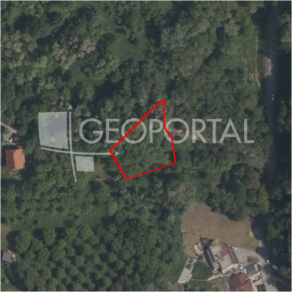

#573 · Građevinsko zemljište, Zagreb (Bijenik) 1389,60 m2
Bijenik, Črnomerec, Grad Zagreb · zemljiste · njuskalo · status active · oglas ↗
Ocjena
- Score
- 55 rule 55 · LLM – · 12.09.2026.
- RLV
- 496.000 € (377 €/m²) · ratio 3,57
- Ukupna investicija
- 4,17 M€
- GBP
- 1.971 m²
- Feedback
- prati · 10.09.2026.
- CRM
- –
Sažetak: Prodaje se zemljište od 1.389,60 m² (više čestica, k.o. Mikulići) na Trešćaku između brojeva 64 i 66, od čega je 829 m² građevinsko u zoni S, za 138.960 € (100 €/m²). Komunalije su na cesti, ali cesta još nije asfaltirana i značajan dio površine nije građevinski.
Oglas
- Cijena
- 138.960 € (100 €/m²)
- Površina
- 1.390 m² · DKP 1.314 m² (odstupanje -5,4 %)
- Prodavatelj
- agencija · ALKAR NEKRETNINE d.o.o.
- Prvi put
- 10.09.2026. · zadnje 11.09.2026. · 1 d na tržištu
Povijest cijene
| Datum | Cijena |
|---|---|
| 10.09.2026. | – |
| 10.09.2026. | 138.960 € |
Flagovi
nagib_gt_25 nagib > 25 % (−10)zone_uncertainty zona nije pregledana (reviewed: false) (−5)
llm_pending LLM ekstrakcija/ocjena nedostupna
Komponente score-a
| rlv | {'gbp': 1971.375, 'kis': 1.5, 'nkp': 1616.5275, 'noi': None, 'rlv': 495812.81217391405, 'ratio': 3.5680254186378386, 'value': None, 'phases': 1, 'profile': 'zagreb_visestambeno', 'gdv_neto': 5431532.4, 'cost_soft': 130110.75, 'gdv_bruto': 6789415.5, 'kis_known': True, 'total_inv': 4170873.975, 'cost_build': 3252768.75, 'cost_other': 640696.875, 'cost_sales': 203682.465, 'demolition': False, 'gbp_source': 'kis', 'rlv_per_m2': 377.2591304347834, 'parcel_area': 1314.25, 'parcelation': False, 'roi_on_cost': 0.25341834021729226, 'profit_at_ask': 1056975.9600000002, 'cost_demolition': 0.0, 'total_inv_phase': 4170873.975, 'parcel_area_effective': 1314.25, 'sale_price_per_m2_nkp': 4200.0} |
| hard | [] |
| info | ['llm_pending'] |
| rubric | {'permits': {'max': 5.0, 'detail': {'permit': 'none'}, 'points': 0.0}, 'location': {'max': 15.0, 'detail': {'source': 'benchmark:seed:Črnomerec', 'sale_price_per_m2_nkp': 4200.0}, 'points': 5.0}, 'physical': {'max': 4.0, 'detail': {'slope_pct': 25.54, 'slope_points': 0.0}, 'points': 0.0}, 'liquidity': {'max': 3.0, 'detail': {'n_cuts': 0, 'points_cut': 0.0, 'points_days': 0.016666666666666666, 'seller_type': 'agencija', 'points_fresh': 0.5, 'price_cut_pct': None, 'days_on_market': 2, 'points_private': 0}, 'points': 0.52}, 'rlv_ratio': {'max': 25.0, 'detail': {'rlv': 495813, 'ratio': 3.568, 'asking_price': 138960.0}, 'points': 25.0}, 'ticket_fit': {'max': 10.0, 'detail': {'asking_price': 138960.0}, 'points': 3.85}, 'zone_quality': {'max': 8.0, 'detail': {'no_upu': True, 'source': 'gis', 'zone_class': 'mjesovito_pretezito_stambeno', 'zone_ideal': True, 'gp_uredjeni': True}, 'points': 6.0}, 'profit_potential': {'max': 20.0, 'detail': {'roi_on_cost': 0.253, 'profit_at_ask': 1056976}, 'points': 20.0}, 'price_vs_benchmark': {'max': 10.0, 'detail': {'source': 'auto:Črnomerec', 'deviation': 0.368, 'ask_eur_m2': 100, 'benchmark_eur_m2': 158.13}, 'points': 9.68}} |
| weights | {'llm': 0.4, 'rule': 0.6, 'model': 0.0} |
| penalties | {'nagib_gt_25': 10, 'zone_uncertainty': 5} |
| raw_score | 70,0 |
| rlv_notes | [] |
| flag_notes | {'max_gbp': 1971, 'slope_pct': 25.54, 'total_inv': 4170874, 'zone_code': 'M1', 'zone_class': 'mjesovito_pretezito_stambeno', 'zone_source': 'gis', 'zone_reviewed': False, 'commercial_pct': 0.0, 'commercial_source': 'zone_rule'} |
| caps_applied | [] |
GIS
- Čestica
- k.o. 335274, k.č. 3414 (pin_buffer, 0,82); k.o. 335274, k.č. 3448 (pin_buffer, 0,74); k.o. 335274, k.č. 3465 (pin_buffer, 0,73)
- Zona
- M1 (mjesovito_pretezito_stambeno) · NIJE pregledana
- kig / kis / katnost
- 0,40 / 1,50 / Po+P+3+Pk
- GP / UPU
- uredjeni · UPU ne
- Pristup / nagib
- unknown · 25,5 % (max 33,5 %)
- More
- –
- Zaštite
- Natura ne · zaštićeno ne · kulturno dobro ne
- Zgrade na čestici
- 0 %
- Match
- 0,82
Karta
Ortofoto (DOF)

RLV kalkulacija — pretpostavke
| gbp | {'value': 1971.375, 'source': 'kis'} |
| kis | {'value': 1.5, 'source': 'gis'} |
| soft_pct | {'value': 0.04, 'source': 'profil'} |
| nkp_ratio | {'value': 0.82, 'source': 'profil'} |
| cost_other | {'value': 640696.875, 'source': 'profil: doprinosi+uređenje po m² GBP, financiranje+rezerva % gradnje'} |
| parcel_area | {'value': 1314.25, 'source': 'dkp'} |
| asking_price | {'value': 138960.0, 'source': 'oglas'} |
| margin_on_cost | {'value': 0.15, 'source': 'profil'} |
| build_cost_per_m2_gbp | {'value': 1650.0, 'source': 'profil'} |
| sale_price_per_m2_nkp | {'value': 4200.0, 'source': 'benchmark:seed:Črnomerec'} |
| transfer_tax_and_acquisition | {'value': 0.06, 'source': 'profil'} |
Ekstrakcija iz oglasa
| ko | Mikulići |
| permit | none |
| zone_claim | S |
| access_road | yes |
| red_phrases | ['Građevinsko zemljište u površini od 829 m2, zona S. od 1389,60m2', 'Cesta još nije asfaltirana'] |
| sea_row_claim | none |
Opis oglasa
Građevinsko zemljište u površini od 829 m2, zona S. od 1389,60m2 na Trešćaku između broja 64 i 66 (k.o. MIKULIĆI više čestica). Sve komunalije na cesti. Cesta još nije asfaltirana, ali su postavljeni rubnici. Cijena 100€/m2. Kuću prodaje agencija, BEZ provizije za kupca.